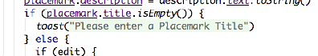
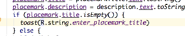
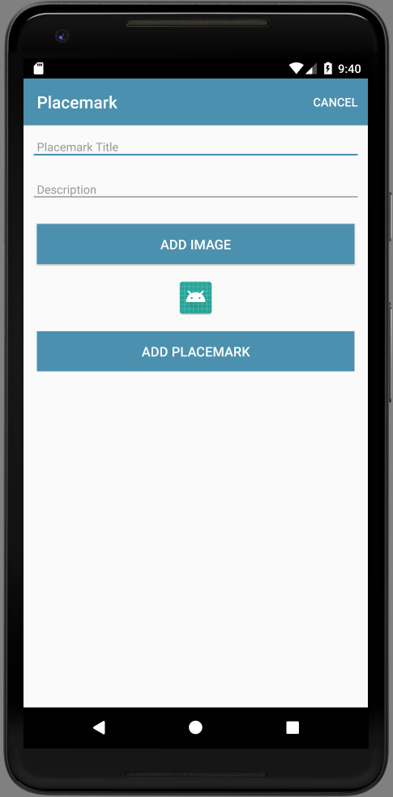
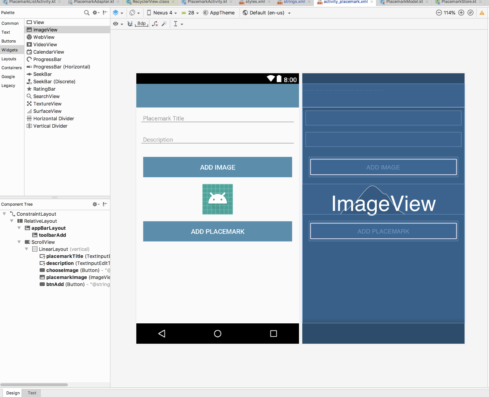
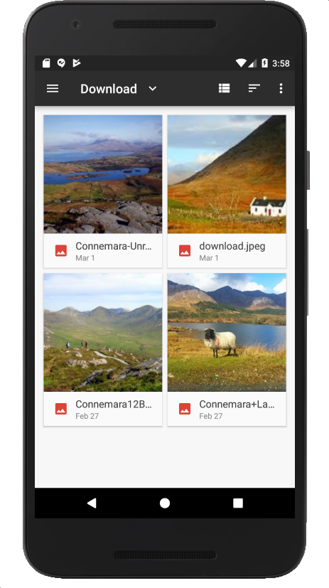
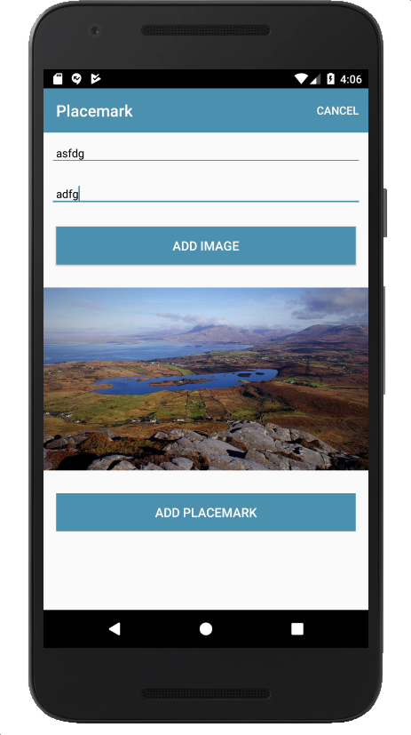

Allow an image to be selected from the phones photos, and stored with the placemark
In PlacemarkActivity - we have the following hard coded string:
toast("Please Enter a title")These strings should be in the strings.xml resource file.
<string name="enter_placemark_title"> Please enter a Placemark Title </string>We can now rewrite the toast like this:
toast(R.string.enter_placemark_title)Notice that, in studio, you might see the code looking like this:

If you click on the string, then it reveals the id:

This is Studio trying to helpfully display the value of the string by interpolating it from the ID.
When you select a placemark - and the PlacemarkActivity is launched, the button label is 'Add Placemark'. See if you can change this to 'Save Placemark'. This is only to be changed if PlacemarkActivity is launched with a placemark passed to it. Make sure the Save Placemark string is externalized (in strings.xml)
<string name="save_placemark"> Save Placemark </string> if (intent.hasExtra("placemark_edit")) {
...
btnAdd.setText(R.string.save_placemark)
}When you select a placemark from PlacemarkListActivity - it presents the activity in the PlacemarkActivity. If you press 'Save Activity' - a new activity is created and appended to the list.
Change this behaviour such that the button should update the existing placemark with the newly entered values, not create a new one. We have new features in PlacemarkStore to enable you to implement this (the update method). Essentially, you will need to call update OR create when handling the button event.
If you complete the implementation, you will notice that even if you update a Placemark's contents, the new contents will not be displayed in PlacemarkList. However, if you consult the logs you may be able to see if the values are actually changed.
Introduce a local flag in onCreate(), always initialised to false:
var edit = falseSet the flag to true if we have a placemark passed:
if (intent.hasExtra("placemark_edit")) {
edit = true
placemark = intent.extras.getParcelable<PlacemarkModel>("placemark_edit")
placemarkTitle.setText(placemark.title)
description.setText(placemark.description)
btnAdd.setText(R.string.save_placemark)
}Then rework the add button event handler to follows:
...
btnAdd.setOnClickListener() {
placemark.title = placemarkTitle.text.toString()
placemark.description = description.text.toString()
if (placemark.title.isEmpty()) {
toast(R.string.enter_placemark_title)
} else {
if (edit) {
app.placemarks.update(placemark.copy())
} else {
app.placemarks.create(placemark.copy())
}
}
info("add Button Pressed: $placemarkTitle")
setResult(AppCompatActivity.RESULT_OK)
finish()
}
...Currently we cam successfully add and edit placemarks. However, although the edit is updating the model, the model is not being refreshed on the view (it is still displaying the original placemark).
Here is a simple addition to fix this - a new method in PlacemarkListActivity:
override fun onActivityResult(requestCode: Int, resultCode: Int, data: Intent?) {
recyclerView.adapter?.notifyDataSetChanged()
super.onActivityResult(requestCode, resultCode, data)
}This is another lifecycle event - this time to be triggered when an activity we have started finishes. We instruct the recyclerView's adapter that the model has been updated.
This should trigger an update and the correct values displayed in the list.
We need a new button, which when pressed will allow the user to select an image.
First the button string resource:
A new string for the button we will introduce:
<string name="button_addImage"> Add Image </string>Then the button itself + an imageView to display the image:
Two new controls:
<Button
android:id="@+id/chooseImage"
android:layout_width="match_parent"
android:layout_height="wrap_content"
android:layout_margin="16dp"
android:background="@color/colorAccent"
android:paddingBottom="8dp"
android:paddingTop="8dp"
android:text="@string/button_addImage"
android:textColor="@color/colorPrimary"
android:textSize="16sp"/>
<ImageView
android:id="@+id/placemarkImage"
android:layout_width="match_parent"
android:layout_height="wrap_content"
app:srcCompat="@mipmap/ic_launcher"/>We can add these before the Add Placemark button. The view should look like this now:

Take some time to look at the Design view in studio:

Remove the controls again - and this time add them using the pallette - dragging and dropping the button + imageView widgits to achieve the same effect. You will notice, however, that we have a set of additional parameters included in our hand coded xml above.
We can add an event handler for the new button:
chooseImage.setOnClickListener {
info ("Select image")
}Note that this is inside the onCreate method. When you click on the button check that the log message is produced.
We will be supporting the selection of images from the phones gallery/photos. There are APIs in android for this purpose. Since Android 4.4, this has been centralised into the Storage Access Framework:
This is part of a larger Content Provider architecture - and serves a much broader remit than just accessing photos. We will try to simplify usage of the framework, by encapsulating it in a helper class
Create a package called org.wit.placemark.helpers, and incorporate this file into the package:
package org.wit.placemark.helpers
import android.app.Activity
import android.content.Intent
import org.wit.placemark.R
fun showImagePicker(parent: Activity, id: Int) {
val intent = Intent()
intent.type = "image/*"
intent.action = Intent.ACTION_OPEN_DOCUMENT
intent.addCategory(Intent.CATEGORY_OPENABLE)
val chooser = Intent.createChooser(intent, R.string.select_placemark_image.toString())
parent.startActivityForResult(chooser, id)
}This function relies on this new string in strings.xml:
<string name="select_placemark_image">Select placemark image</string>Notice that this is just a function, not a class or an object. Its purpose is to show an image picker dialog.
We will now trigger this dialog. When starting an activity like this, we usually define a special code - which we will expect the new activity to send back when it is finished (otherwise we might get confused as to which activity has just finished).
Here is the id we invent - make it a class member of PlacemakerActivity:
val IMAGE_REQUEST = 1Then to trigger the picker:
chooseImage.setOnClickListener {
showImagePicker(this, IMAGE_REQUEST)
}If there are no images in your simulator, you might want to launch a browser, find some images and save them to your camera roll (long press in chrome will trigger this).
Run the app now and verify that the picker does in fact appear, presenting a set of images for selection.

The images will not go anywhere as yet.
We can now extend the PlacemarkModel to include the image reference as an additional field:
var image: String = ""In PlacemarkActivity we can recover the image name when the activity picker activity finishes. This is via a lifecycle event - triggered when an activity we may have started finishes:
override fun onActivityResult(requestCode: Int, resultCode: Int, data: Intent?) {
super.onActivityResult(requestCode, resultCode, data)
when (requestCode) {
IMAGE_REQUEST -> {
if (data != null) {
placemark.image = data.getData().toString()
}
}
}
}Notice how we are recovering the name only when the IMAGE_REQUEST is seen.
See if you can run the application under debug - and place a breakpoint in where the image names is recovered above. See if you can inspect the name.
In order to display the image, we introduce another helper :
fun readImage(activity: Activity, resultCode: Int, data: Intent?): Bitmap? {
var bitmap: Bitmap? = null
if (resultCode == Activity.RESULT_OK && data != null && data.data != null) {
try {
bitmap = MediaStore.Images.Media.getBitmap(activity.contentResolver, data.data)
} catch (e: IOException) {
e.printStackTrace()
}
}
return bitmap
}Finally, we can use this method to display the image in the image view:
IMAGE_REQUEST -> {
if (data != null) {
placemark.image = data.getData().toString()
placemarkImage.setImageBitmap(readImage(this, resultCode, data))
}Run this now, and the selected image should be displayed in the view.

If you run run the app - we seem to be able to load the image when we create a new placemark, but not when we proceed to edit one.
This is relatively straightforward. First we define an additional image helper for convenience:
fun readImageFromPath(context: Context, path : String) : Bitmap? {
var bitmap : Bitmap? = null
val uri = Uri.parse(path)
if (uri != null) {
try {
val parcelFileDescriptor = context.getContentResolver().openFileDescriptor(uri, "r")
val fileDescriptor = parcelFileDescriptor.getFileDescriptor()
bitmap = BitmapFactory.decodeFileDescriptor(fileDescriptor)
parcelFileDescriptor.close()
} catch (e: Exception) {
}
}
return bitmap
}We can now call this when in edit mode:
if (intent.hasExtra("placemark_edit")) {
//... as before
placemarkImage.setImageBitmap(readImageFromPath(this, placemark.image))
}The image should now appear when we edit a placemark.
Placemark application so far:
As a user, create a new placemark with a title + image. Now edit the placemark and change the title - and update the placemark. Notice that the title has changed in PlacemarkList.
Edit the placemark and change the image - and update the placemark. Go back in to edit the placemark again - what image do you see?
There is a bug here - the placemark activity is still showing the original image. See if you can debug and fix this bug.
(HINT - look in the PlacemarkMemStore class)
in PlacemarkActivity, if you are editing a placemark OR if the placemark already has an image, change the button label to be 'Change Image' from Add Image
Introduce a new ImageView into the PlaceMarkCard view (displayed on PlacemarkListAcivity). Display the placemark images here (if an image has been loaded)